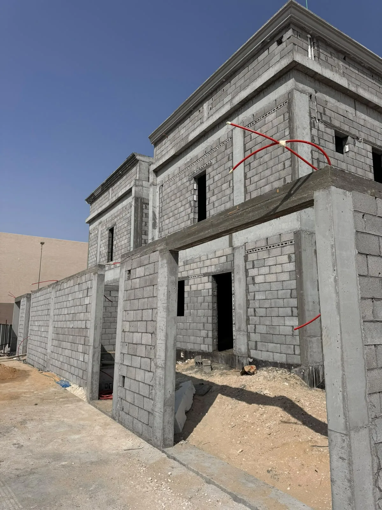

تساعد معرفة مراحل بناء وتشييد الفلل في الرياض المالك على اتخاذ القرارات في وقتها ومتابعة المشروع دون الدخول في التفاصيل اليومية لكل حرفة. البناء سلسلة مترابطة؛ فإذا تغير توزيع داخلي بعد تنفيذ الأساسات أو تأخر اعتماد التكييف حتى إغلاق الأسقف، قد تظهر تكاليف وتعديلات كان يمكن تجنبها.
لا يوجد جدول واحد يناسب جميع الفلل؛ فالمساحة وعدد الأدوار وطبيعة التربة والتصميم وطرق الإنشاء ومستوى التشطيب وتوفر المواد تؤثر في المدة. لكن من الممكن تنظيم المشروع ضمن مراحل ثابتة المبدأ، لكل منها مدخلات ومخرجات ونقاط فحص قبل الانتقال إلى المرحلة التالية.
المرحلة صفر: تحديد الاحتياج والميزانية ونطاق المشروع
قبل رسم التفاصيل، يحتاج المالك إلى تحديد عدد المستخدمين وطريقة المعيشة والفراغات المطلوبة ومستوى التشطيب والميزانية والموعد المستهدف. هذه القرارات تحدد مساحة البناء وتعقيد الأنظمة والخامات، وتمنع تصميم مشروع أكبر من القدرة المالية أو أقل من الاحتياج الحقيقي.
يُفضّل تقسيم المتطلبات إلى أساسية وقابلة للتطوير وكمالية. كما يجب تحديد هل المطلوب بناء عظم فقط، أم بناء وتشطيب، أم تنفيذ كامل بنظام تسليم المفتاح. وضوح نقطة النهاية ضروري لبناء عرض ومقارنة عادلة.
- الاحتياجات العائلية الحالية والمتوقعة.
- عدد الأدوار والفراغات والمواقف والمساحات الخارجية.
- مستوى الخامات والتشطيبات والأعمال الخاصة.
- حدود الميزانية وهامش القرارات والتغييرات.
- نموذج التعاقد ومسؤولية التصميم والتوريد والتنفيذ.
دراسة الموقع والرفع والمسح ومتطلبات الترخيص
تبدأ الدراسة ببيانات الأرض والحدود والمناسيب والوصول للموقع والخدمات المحيطة، ثم تُستكمل الفحوص والدراسات التي يحددها المختصون وفق طبيعة المشروع. تؤثر هذه المعلومات في تصميم الأساسات والتصريف ومناسيب المداخل والارتدادات وترتيب حركة المعدات.
يجب أن تكون المخططات وإجراءات الترخيص من خلال الجهات والممارسين المؤهلين وفق المتطلبات السارية. لا تبدأ أعمالًا إنشائية اعتمادًا على تصور أولي أو مخطط غير منسق، لأن أي اختلاف في الأبعاد أو النظام الإنشائي ينعكس على الكميات والوقت.
إعداد المخططات المتكاملة وجدول الكميات
المخطط المعماري يحدد الفراغات والحركة والواجهات، والإنشائي يحدد النظام الحامل، بينما توضح مخططات الكهرباء والسباكة والتكييف مسارات الخدمات. القيمة الحقيقية تظهر عندما تُراجع هذه الملفات معًا لكشف التعارض بين الجسور والفتحات والأسقف والأجهزة قبل الموقع.
يساعد جدول الكميات في تحويل الرسومات إلى بنود قابلة للتسعير والقياس. ويجب ربطه بالمواصفات، لأن اسم البند وحده لا يوضح نوع المادة أو طريقة التنفيذ أو الاختبارات والملحقات المطلوبة.
معماري
توزيع الفراغات والواجهات والمناسيب والأبواب والتشطيبات الأساسية.
إنشائي
الأساسات والأعمدة والجسور والبلاطات والتفاصيل التنفيذية.
كهروميكانيكي
الكهرباء والسباكة والتكييف والتهوية والأنظمة المرتبطة.
كميات ومواصفات
مرجع للتسعير والقياس واعتماد المواد ومتابعة التغييرات.
تجهيز الموقع والحفر والأساسات والعزل
تجهيز الموقع وتوقيع المحاور
يُنظم الدخول والتخزين والسلامة، وتُراجع حدود الأرض والمناسيب، ثم تُوقع المحاور ونقاط المرجع قبل الحفر.
الحفر وتجهيز التربة
تُنفذ الأعمال حسب المخططات والتوصيات المعتمدة، مع مراجعة العمق والمنسوب وحالة قاع الحفر قبل الانتقال.
الأساسات والخدمات الأرضية
يُراجع التسليح والقوالب والفتحات والتمديدات المطلوبة قبل الصب، ثم تُنفذ المعالجة والفحوص وفق خطة المشروع.
العزل والردم
تُفحص طبقات العزل والحماية ومسارات التصريف، ويُنفذ الردم والدمك على مراحل حسب المواصفات.
تنفيذ الهيكل الخرساني وبناء العظم
تشمل مرحلة العظم الأعمدة والجسور والبلاطات والسلالم والمباني بحسب النظام المعتمد. قبل كل صبة تُراجع المحاور والأبعاد والمناسيب والتسليح والغطاء والفتحات وأعمال الكهرباء والسباكة التي يجب تمريرها. لا يكفي فحص الشكل بعد الصب لأن كثيرًا من عناصر الجودة تصبح غير قابلة للرؤية.
بعد تقدم الهيكل تبدأ أعمال المباني وتحديد الفتحات. هنا يجب تثبيت أبعاد الأبواب والنوافذ ومواقع خزائن الخدمات ووحدات التكييف والفتحات الرأسية. راجع دليل بناء العظم في الرياض للتفاصيل الخاصة بهذه المرحلة.
تأسيس الكهرباء والسباكة والتكييف قبل التشطيب
تبدأ قرارات الأعمال الكهروميكانيكية مبكرًا، حتى لو ظهر معظم تنفيذها بعد العظم. يجب ربط مواقع اللوحات والمخارج والأجهزة الصحية ووحدات التكييف بالفرش والتصميم الداخلي، لأن نقل نقطة بعد اللياسة أو البلاط يسبب تكسيرًا وتأخيرًا.
تُفحص المسارات والميول والضغوط والعزل والفتحات ونقاط الصيانة قبل الإغلاق. كما يجب ترك إمكانية الوصول إلى العناصر التي تحتاج صيانة مستقبلية، وعدم إخفائها خلف تشطيب ثابت دون فتحة مناسبة.
- اعتماد مخطط الأثاث والمطبخ قبل تثبيت المخارج.
- مراجعة أحمال الكهرباء واللوحات ومسارات التيار الخفيف.
- اختبار شبكات المياه والصرف قبل الإغلاق.
- تنسيق مخارج ومصارف التكييف مع الأسقف والواجهات.
- توثيق الأعمال المخفية بالصور والمخططات المحدثة عند الاتفاق.
اللياسة والعزل والتشطيبات الداخلية والخارجية
بعد فحص التأسيسات تبدأ معالجة الأسطح واللياسة والعزل والأسقف والأرضيات والكسوات والدهانات والأبواب والواجهات. ترتيب البنود مهم؛ فتركيب عنصر نهائي قبل انتهاء الأعمال الأعلى منه يعرضه للتلف، وتأخر عينة أو لون قد يوقف عدة فرق.
يجب اعتماد عينات واقعية للخامات والألوان تحت إضاءة المكان قدر الإمكان، وتحديد طريقة تركيبها والفواصل والوزرات والحواف والملحقات. ويمكن الرجوع إلى دليل اختيار مواد التشطيب لمقارنة المتانة والصيانة والمظهر.
الاختبارات وقائمة الملاحظات والتسليم النهائي
تسبق التسليم جولة فحص منظمة تشمل تشغيل الأنظمة، اختبار النقاط، مراجعة الميول والتصريف، الأبواب والنوافذ، جودة الأسطح، نظافة الفواصل، وسلامة العناصر الظاهرة. تُسجل الملاحظات بموقع ووصف ومسؤول وموعد إغلاق بدل الاكتفاء بعبارات عامة.
تشمل حزمة التسليم ما تم الاتفاق عليه من مفاتيح ووثائق واعتمادات ونتائج اختبارات وضمانات وتعليمات تشغيل وصيانة. ولا ينبغي اعتبار تنظيف الموقع نهاية المشروع إذا بقيت نقاط فنية غير مختبرة أو ملاحظات مفتوحة.
تشغيل الأنظمة
تجربة الكهرباء والمياه والصرف والتكييف والعناصر المتحركة.
جولة ملاحظات
قائمة محددة بالموقع والوصف والأولوية والمسؤول والموعد.
إغلاق موثق
إعادة فحص كل ملاحظة قبل اعتماد الإغلاق والدفعة المرتبطة.
مستندات التسليم
تجميع الوثائق والضمانات والتعليمات المتفق عليها في العقد.
ما الذي يؤثر في مدة وتكلفة بناء الفيلا؟
تتأثر المدة بجاهزية المخططات والتراخيص، حجم الهيكل، تعقيد الواجهات والأنظمة، سرعة الاعتمادات، المواد طويلة التوريد، توفر الفرق، والتغييرات أثناء التنفيذ. لذلك لا يمكن تقييم وعد زمني دون رؤية البرنامج وافتراضاته.
أما التكلفة فتُبنى من الكميات والمواصفات ونطاق التوريد وظروف الموقع ومستوى التشطيب، وليس من مساحة الأرض أو البناء وحدها. أفضل تقدير يأتي بعد اكتمال مستندات كافية ومعرفة الحالة، مع توضيح البنود التقديرية والاحتياطيات بدل إخفائها داخل رقم عام.
الخلاصة: مشروع الفيلا سلسلة قرارات مترابطة
نجاح بناء فيلا في الرياض يعتمد على بداية منظمة: احتياج وميزانية واقعية، مخططات منسقة، جدول كميات، عقد واضح، وبرنامج يربط التنفيذ بالفحص والاعتماد. بعد ذلك تصبح كل مرحلة بوابة للمرحلة التالية، لا مجرد نشاط منفصل.
تساعد شركة تعاود للمقاولات العامة أصحاب المشاريع على تنظيم وتنفيذ أعمال البناء والإنشاءات والتشطيبات في الرياض. كلما شاركت المخططات وبيانات الأرض والمرحلة الحالية مبكرًا، أصبح تحديد النطاق والخطوة التالية أدق.
ابدأ تخطيط فيلتك بنطاق واضح
شاركنا مساحة المشروع والمخططات والمرحلة الحالية ومستوى التنفيذ المطلوب لمناقشة التسلسل المناسب.
ناقش مشروع بناء الفيلاتابع أدلة المقاولات والبناء
انتقل إلى الدليل المحوري أو الأدلة المرتبطة، ثم إلى الخدمة عندما تصبح جاهزًا للتنفيذ.